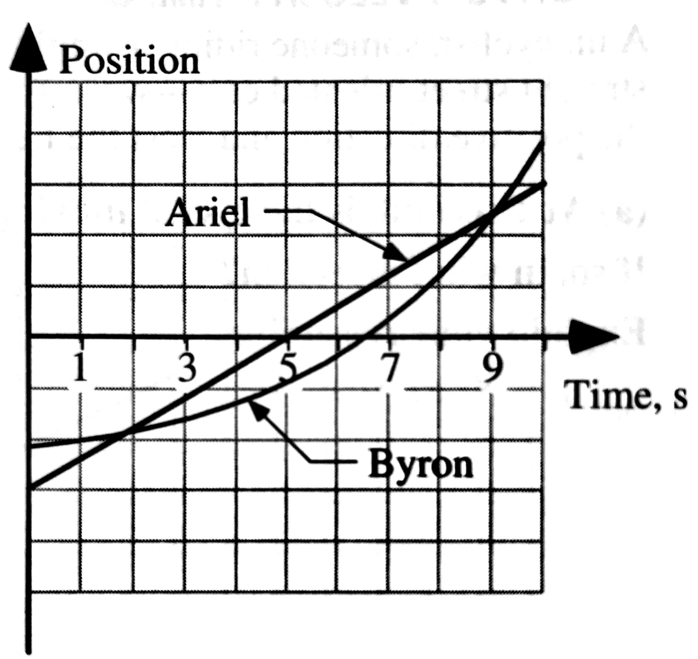
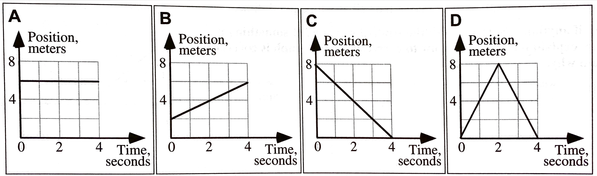
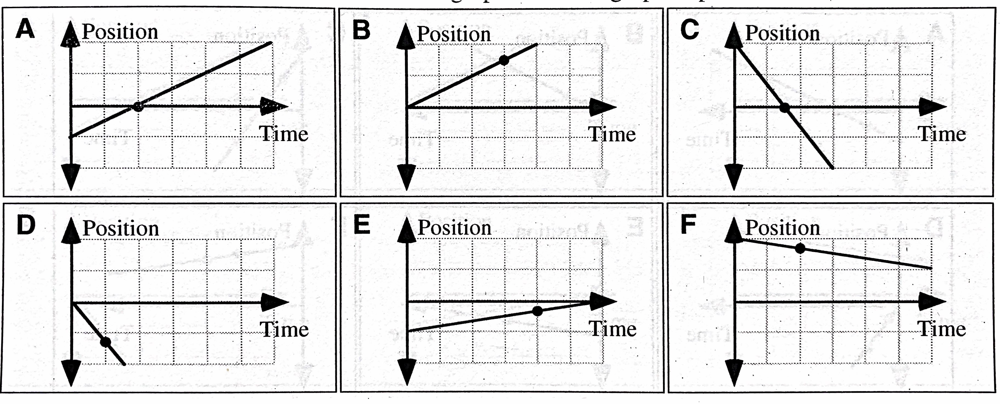
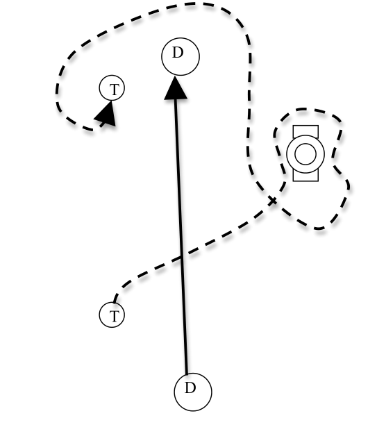
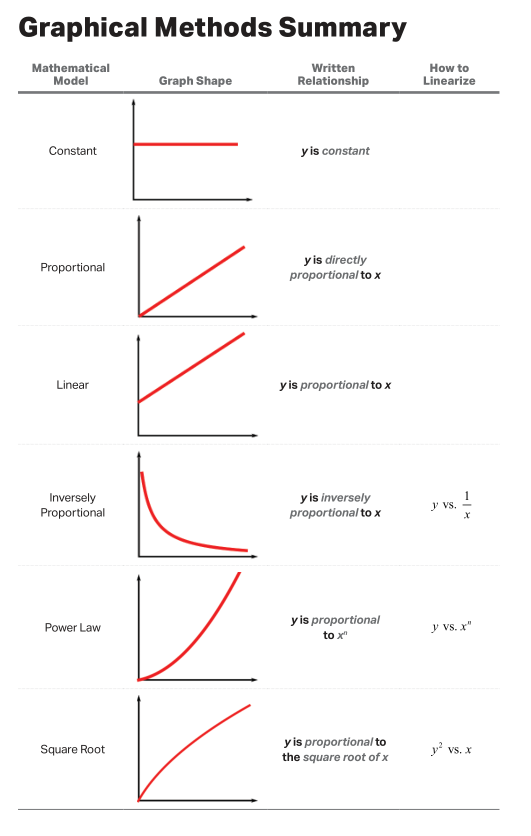
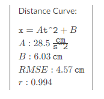

layout: true <div class="my-header"><img src="images/scsdLogo.png" style="height: 70px;"/></div> --- ## .gray[2022.12.06] .blue[AP Physics] .qotd[❓of the 📅: What is the funniest thing that has happened to you in the past week?] 1. Tug-of-War Simulation 2. Interactions & Interaction Stations 3. Force Notes HW: - Week 14 - Force Vector Math & Projectile Prediction Pivot - Quiz Friday - Projectile Motion Quiz 2 --- ###[Tug-of-War Simulation](https://phet.colorado.edu/sims/html/forces-and-motion-basics/latest/forces-and-motion-basics_en.html?screens=1) True/False: Determine whether each of the following statements are true. Support your claims with evidence and examples. 1. A person's location on the rope matters. 2. Different combinations of people can produce the same sum of forces. 3. The sum of the forces on the cart is always equal to the addition of the individual forces. 4. It is impossible for the cart to accelerate to the left if there are people pulling it to the right. 5. The side with the bigger person will always win. 6. The side with more people will always win. 7. It is impossible to make the cart decrease in speed. 8. It is impossible to make the cart move at a steady speed. 9. The cart will always move in the direction of the sum of the forces. 10. If the sum of the forces is zero, the cart must be at rest. --- ##Tug-of-War Simulation Summary: - Make an argument (claim-evidence-reasoning) for how forces/combinations of force lead to: + Constant Velocity + Acceleration --- #Interaction Stations ##Contact Interactions Interaction between two objects that results in **compression**, **tension** or **shearing**. -- **Compression** ➡ Squishing a material together -- **Extension** ➡ Stretching a material -- **Shearing** ➡ Pulling surfaces parallel to each other --- class:center, middle # A ***force*** is an interaction between two objects. --- #Interaction types - **Gravitational Force** `\(\vec{F}_g\)` (Long Range) ➡ Attractive force between all objects with mass -- - **Normal Force** `\(\vec{F}_N\)` (Contact, Compression) ➡ "Perpendicular Force" occurs because atoms are compressed and want to return to original position. **Always perpendicular to surfaces in contact** -- - **Spring Force** `\(\vec{F}_s\)` (Contact, Stretch or Compression) ➡ Spring is stretched or compressed and wants to return to "natural" length -- - **Tension** `\(\vec{F}_T\)` (Contact, Stretch) ➡ Atomic Structure is stretched and wants to return to natural length -- - **Friction** `\(\vec{F}_f\)` (Contact, Shear) ➡ Irregular surfaces interlock to slow or prevent sliding of two surfaces relative to eachother **Always parallel to the surfaces in contact** -- - **Drag** `\(\vec{F}_D\)` (Contact) ➡ Fluid/gas Friction, resists objects motion through a fluid/gas -- - **Bouyant Force** `\(\vec{F}_B\)` (Contact) ➡ Fluid/Gas Normal Force -- - **Electrostatic Force** `\(\vec{F}_e\)` (Long Range) - Attractice or resistive force because objects have charge -- - **Magnetic Force** `\(\vec{F}_M\)` (Long Range) - Attractive or repulsive force because of moving charge --- ## .gray[2022.12.05] .blue[AP Physics] .qotd[❓of the 📅: Are you more productive at night or in the morning?] 1. Finish Mallet Ball 2. Fan Carts 3. Tug-of-War Simulation 4. Interactions & Interaction Stations HW: - Week 14 (Will be posted this afternoon) --- ## .gray[2022.12.02] .blue[AP Physics] .qotd[❓of the 📅: Who is the most competitive person you know?] 1. Quiz 2. Mallet Ball & Thinking about [Forces](https://www.mrporterphysics.com/Presentations/Forces/talks/APForces.html#1) --- ###.gray[2022.11.30] AP Physics .red[Do Now] Cannonballs with different masses are shot from cannons at various angles above the horizontal. The velocity of each cannonball as it leaves the cannon is given, along with the same vertical component of that velocity. .center[<img src = "images\cannondonow.jpg" width = "425 px"/>] 1. Rank the time the cannonballs are in the air. Explain. 2. Rank the range of the cannonballs (horizontal displacement). Explain. --- ###.gray[2022.11.30] AP Physics .red[Do Now 2] Cannonballs with different masses are shot from cannons at various angles above the horizontal. The velocity of each cannonball as it leaves the cannon is given, along with the same horizontal component of that velocity. .center[<img src = "images\cannondonowvx.jpg" width = "425 px"/>] 1. Rank the time the cannonballs are in the air. Explain. 2. Rank the range of the cannonballs (horizontal displacement). Explain. --- ###.gray[2022.11.30] AP Physics .red[Do Now 3] A projectile is launched on level ground: - What angle(s) give you the greatest range? Determine and explain why - What angle(s) give you the greatest hang time? Why? - What angles give the same range for the same initial velocity? Why? --- #Derive an expression for the <u>Range</u> of a projectile on a flat surface in terms of the initial velocity, `\(v_0\)`, launch angle, `\(\theta\)`, and any physical constants (i.e. `\(g\)`) --- ## .gray[2022.11.30] .blue[AP Physics] .qotd[❓of the 📅: Which pizza style is the best: New York, Chicago, Detroit, or New Haven?] 1. Do Now 2. Pivot-less Lab 3. Relative Motion Pivot HW: - Week 13 Posted on Canvas - Projectile Motion Quiz Friday (KIN 5. Projectile Motion - I can solve problems involving objects experiencing projectile motion.) --- ##Projectile Motion Lab 1. Determine the launch velocity of your ball off your ramp using a launch off your lab table. 2. Find a new launch height and predict the landing spot. --- ## .gray[2022.11.29] .blue[AP Physics] .qotd[❓of the 📅: If you had a warning label, what would yours say?] 1. Angled Launched Projectiles - Physics Classroom Calc Pad - [Angled Launched Projectiles 1](https://www.physicsclassroom.com/calcpad/launch/CPVP15) - Porter Packet: 2.4 & 2.5 HW: - Week 13 Posted on Canvas - Projectile Motion Quiz Friday (KIN 5. Projectile Motion - I can solve problems involving objects experiencing projectile motion.) --- ## .gray[2022.11.28] .blue[AP Physics] .qotd[❓of the 📅: If one superhero was real, which one should it be?] 1. AP Workbook 1.M & 1.N 2. Angled Launched Projectiles - Physics Classroom Calc Pad - [Angled Launched Projectiles 1](https://www.physicsclassroom.com/calcpad/launch/CPVP15) - Porter Packet: 2.4 & 2.5 HW: - Week 13 Posted on Canvas (practice with projectile motion) - Projectile Motion Quiz Friday (KIN 5. Projectile Motion - I can solve problems involving objects experiencing projectile motion.) --- ## .gray[2022.11.21] .blue[AP Physics] .qotd[❓of the 📅: What is the best part of the Thanksgiving feast?] 1. Porter Packet - 2.3 Projectile Motion Ranking Task 2. Solving Horizontal Projectile Motion Problems 3. Porter Packet 2.3 Horizontally Fired Projectiles --- ##Horizontally Fired Projectiles Examples of this type of problem are - A pool ball leaves a 0.60-meter high table with an initial horizontal velocity of 2.4 m/s. Predict the time required for the pool ball to fall to the ground and the horizontal distance between the table's edge and the ball's landing location. - A soccer ball is kicked horizontally off a 22.0-meter high hill and lands a distance of 35.0 meters from the edge of the hill. Determine the initial horizontal velocity of the soccer ball. --- ##Problem-Solving Approach 1. Use the given values of the initial velocity (the magnitude and the angle) to determine the horizontal and vertical components of the velocity (`\(v_{0x}\)` and `\(v_{0y}\)`). -- 2. Carefully read the problem and list known and unknown information in terms of the symbols of the kinematic equations. For convenience sake, make a table with horizontal information on one side and vertical information on the other side. -- 3. Identify the unknown quantity that the problem requests you to solve for. -- 4. Select either a horizontal or vertical equation to solve for the time of flight of the projectile. For non-horizontally launched projectiles, the second equation listed among the vertical equations (`\(v_{y} = v_{0y} + a_y t\)`) is usually the most useful equation. -- 5. With the time determined, use a horizontal equation (usually `\(\Delta x = v_{0x}t + \frac{1}{2}a_x t^2\)` ) to determine the horizontal displacement of the projectile. -- 6. Finally, the peak height of the projectile can be found using a time value that is one-half the total time of flight. The most useful equation for this is usually `\(\Delta y = v_{0y}t +\frac{1}{2}a_yt^2\)`. --- ##Solving the Examples: [Jamboard Link (Notes)](https://jamboard.google.com/d/1inujPo8RHyBy5tjz98HmUns9DaEFU5YdGc-hmE3tc_0/edit?usp=sharing) - A pool ball leaves a 0.60-meter high table with an initial horizontal velocity of 2.4 m/s. Predict the time required for the pool ball to fall to the ground and the horizontal distance between the table's edge and the ball's landing location. - A soccer ball is kicked horizontally off a 22.0-meter high hill and lands a distance of 35.0 meters from the edge of the hill. Determine the initial horizontal velocity of the soccer ball. --- ##Mini Lab 1. Make measurements to calculate the speed at which you ball leaves the table using only a meterstick. 2. Using this launch velocity, go to a different height and predict the landing spot of your ball. - Ideas: top of cabinets, top of goggle cabinet, etc --- ## .gray[2022.11.17] .blue[AP Physics] .qotd[❓of the 📅: Do you think you could live without your smartphone for 24 hours?] 1. Finish Collecting Data on Three Views of a Projectile 2. Whiteboard Results (3 Graphs) - provide equation for anything linear 3. What is a projectile? 4. Solving Freefall problems 5. Determine your reaction time with a ruler --- ##Solving Freefall Problems -- - Projectiles & Objects in Free Fall accelerate at `\(\vec{g}\)` -- - The magnitude of `\(g\)` is 9.8 m/s/s or often rounded to 10 to ease calculations - The direction is **always** towards earth which is *often* but not always negative (negative indicates downward) -- - If the object is dropped `\(v_0 = 0\)` m/s -- - When thrown straight up, the (vertical) velocity at the objects highest point is 0 m/s -- - This means you can make `\(v_f\)` = 0 if you are solving for something at the peak (time to highest point, max height, etc) -- - If an object is projected upwards in a perfectly vertical direction, then the velocity at which it is projected is equal in magnitude and opposite in sign to the velocity that it has when it returns to the same height. That is, a ball projected vertically with an upward velocity of +30 m/s will have a downward velocity of -30 m/s when it returns to the same height. -- - You can often avoid the quadratic formula by finding additional quantities and using an equation other than `\(x = x_0 + v_0 t + \frac{1}{2}at^2\)` --- class:center, middle ###Derive an equation for the time, `\(t\)`, it takes for a ruler to fall before caught. Express your derivation in terms of the distance the ruler falls, `\(\Delta y\)`, and any universal constants. -- Measure & calculate your reaction time --- ## .gray[2022.11.15] .blue[AP Physics] .qotd[❓of the 📅: What was the last book you read?] 1. Using Vector Components to add non-perpendicular vectors - [Adding Non-Perpendicular Vectors](https://www.physicsclassroom.com/calcpad/launch/CPVP7) 2. Pivot - Three Views of a Projectile - Collect Data, compare as a lab group & whiteboard results 3. Three Views of Projectile - Group Lab - Collect data as a group & whiteboard results 4. Freefall Problem-Solving HW: - Finish...TBD --- ## .gray[2022.11.14] .blue[AP Physics] .qotd[❓of the 📅: Have you ever had a surprise party? (that was an actual surprise)] 1. Vector Compoents: - [Vector Components 1](https://www.physicsclassroom.com/calcpad/launch/CPVP3) - [Vector Components 2](https://www.physicsclassroom.com/calcpad/launch/CPVP4) 2. Using Vector Components to add non-perpendicular vectors - [Adding Non-Perpendicular Vectors](https://www.physicsclassroom.com/calcpad/launch/CPVP7) --- #Vector Components .left-column[ <img src="https://cnx.org/resources/f8d41bad11700e81a082e2599e209bc1627e913d" width = "300"/> ] .right-column[ - A vector can be split up into <u>*components*</u> or pieces that add up to the or original vector. - Generally, it is useful to split these in to right angle components, or perpindicular components. $$A_x = A\cos\theta$$ $$A_y = A\sin\theta$$ ] --- ##Adding Vectors without scaled diagrams: .center[<img src="https://cnx.org/resources/8e11bc1c232b931838be56eebc51a59a75caf887" width = "800"/>] --- ##Adding Vectors without scaled diagrams: .center[<img src="https://cnx.org/resources/bb90619510507bac121310ab76e04de501c942da" width = "800"/>] --- ##Adding Vectors without scaled diagrams: .center[<img src="https://cnx.org/resources/3c9d0175b9bb054034b5fadf952414b89e82d73c" width = "800"/>] --- ## .gray[2022.11.10] .blue[AP Physics] .qotd[❓of the 📅: Have you ever completed anything on your “bucket list”?] 1. Buffet Quiz 2. Test Corrections 3. IF complete with everything: Stressed out Swimmer Challenge Problem [Link](https://www.bu.edu/gk12/mikkel/challenge_questions/The%20Stressed-out%20Swimmer.doc) --- ## .gray[2022.11.08] .blue[AP Physics] .qotd[❓of the 📅: Would you rather live swim in the world's coldest water or eat the world's hottest pepper?🥶🥵] 1. Test corrections - Tests are secure, they DO NOT leave the room Final Test Grade: $$Grade = \sqrt{\frac{\textrm{Points with Half Back}}{\textrm{Total Test Points}}}$$ HW: Corrections Due Thursday --- ##Test Corrections Process: 1. Determine correct answer for questions answered incorrectly + For FRQ you need to correct the entire part (i.e. part (a)) if you lost *any* points + No you cannot see what you put before - start from scratch 2. For MC questions you must provide a justification for your answers + Tips: - Start with a fact of physics "slope of VT is acceleration" or "area of VT is displacement" - Draw a diagram to help (i.e. draw a VT graph) - Try to use a claim evidence reasoning format to write your justification 3. For FRQ's ANSWER THE QUESTION THAT IS ASKED! 4. Finally, compare your new, correct answers to your test and determine if your mistake was one of the 4 C's: clueless, careless, conceptual, or calculation. 5. Put everything togeter (old test, new test, correction sheets) with a paperclip and put in your test folder. --- ###.gray[2022.11.07] AP Physics .red[Do Now] .center[ <img src="https://cnx.org/resources/e53cd5a40480cc2ba8b28a773a621e8fadcb8fde/Figure_03_02_20a.jpg" width = "700px"/> ] Each city block in the image is 100 meters. 1. Determine the **distance** that each walker traveled. 2. Determine the **displacement** of each walker. --- ## .gray[2022.11.07] .blue[AP Physics] .qotd[❓of the 📅: Do you have any weird/unique routines or superstitions? (For example: I ***have*** to put on my left sock before my right sock, and the same for shoes, left on first.)] 1. Do Now 2. New Lab Groups 3. Vectors - Physics Classroom Practice - Work on own assignment, but with on pace with lab group - [Adding Perpendicular Vectors](https://www.physicsclassroom.com/calcpad/launch/CPVP5) and [Adding Three or More Perpendicular Vectors](https://www.physicsclassroom.com/calcpad/launch/CPVP6) - [Resolving Vectors into components](https://www.physicsclassroom.com/calcpad/launch/CPVP3) **Tests will be graded *after* 2nd block** HW: - Test corrections due Friday --- #Vectors & Vector Math ###A *<u>vector</u>* is a quantity with both *magnitude* (size) and *direction*. -- Examples: - The child was displaced 9 meters North. - The car has a velocity of 10 meters per second East -- ###A *<u>scalar</u>* is a quantity with just *magnitude*. -- Examples: - The child traveled a distance of 12 meters - The car is moving 20 miles per hour - The frog has mass of 0.5 kg. --- #Displacement Vectors: .center[<img src="https://cnx.org/resources/2dca7613815b1ddc825c471fa6107b64cfff9690" width = "800"/>] --- #Displacement Vectors: .center[<img src="https://cnx.org/resources/8d90bace3c41073bc136d8ca2351a42509498171" width = "800"/>] --- #Step 1: .center[<img src="https://cnx.org/resources/d8f822f649c9633546e5ad97d999d28f2d579e9a" width = "1000"/>] --- #Step 2: .center[<img src="https://cnx.org/resources/2cbaba965549e0b08580e401608645784add6e5a" width = "700"/>] --- #Step 3: .center[<img src="https://cnx.org/resources/5892bb649aa7ba670c45226088205c3e05a30f50" width = "700"/>] --- ###Does the order of vector addition matter? -- .center[<img src="https://cnx.org/resources/6a6fe828418a1c1b77792c19015c6c95acb3a871" width = "700"/>] --- ## .gray[2022.11.02] .blue[AP Physics] .qotd[❓of the 📅: Do you have any weird/unique routines or superstitions? (For example: I ***have*** to put on my left sock before my right sock, and the same for shoes, left on first.)] 1. [⏲ 20 Minutes] Summary Whiteboards 2. [⏲ 60 Minutes] Test Preview 👀 -- - Remove ***everything*** from your table - Each group gets 2 copies of the test **without** the question, but everything else (diagrams, situation descriptions, etc) - Review each question your group + What questions could be asked? Solve them + What representations could go with the written description? Draw them + What doesn't makes sense about the question? Make sense of it as a group -- or ask another group --- ## .gray[2022.11.01] AP Physics .qotd[❓of the 📅: Breakfast: most important meal of the day? Or overrated? How do you fuel up for the day?] 1. Test Roadrunner Prediction (if you have not yet done this) 2. Porter Packer 1.11 AP FRQ Practice - Paragraph Length Response - whiteboard notes, diagrams, thoughts, and then write the paragraph on your own. - Ranking Task - whiteboard answer HW: - Week 9 + AP Classroom Test Review + Sign up for reassessments (if necessary) --- ##Tips for Paragraph Length Response: ####ABCD: Answer, Basic Physics, Cite information, Draw it together -- **Answer the Question** (Claim) -- - DO: State whether something increases, decreases, or stays the same. - If given two or more cases to choose from, state which case answers the question, or clearly state that both cases are the same. -- - DON'T: Just say that something “changes”. We need to know how it changes. Talk about how it could be either case or both. You need to commit to an answer. --- ##Tips for Paragraph Length Response: ####ABCD: Answer, Basic Physics, Cite information, Draw it together **Basic Physics** (Evidence) -- - Your explanation needs to include at least one statement of basic physics. You'll know that this is a statement of basic physics because a statement of basic physics is true all the time, every day, and in all situations. Basic physics can be the name of a law of physics, like "Newton’s Third Law", or it can be a statement of the law itself, such as "when the horse pulls the cart, the cart pulls back on the horse with the same force." --- ##Tips for Paragraph Length Response: ####ABCD: Answer, Basic Physics, Cite information, Draw it together **Cite Important Information** (Evidence) -- - This is when you point out important aspects of this particular situation that are relevant to your explanation. The Cite Information sentence should start with the words “in this situation” or “in Case 1” or “for the small cart, ...” and proceed to say something about the particular problem you are presented with. -- **Draw It All Together** (Reasoning) -- - This is when you take your statements of basic physics and the important information that you cited from this situation and show how it logically leads to the correct answer. Depending on how well you do your B’s and C’s, your “Draw it Together” might only be a single sentence. --- ##More Tips for Paragraph Length Response: - Do NOT use "it", "they", "them". Use good nouns (you know the words on your reference table) -- - Use good verbs that talk about what the nouns are doing - (Objects will speed up, slow down, change direction, gain/lose/transfer energy, gain/lose/transfer momentum, exert or experience forces, etc.) -- - You do not need to restate the question. -- - Don't write more than you mean to -- - Don't write just "force" - state the specific force -- - Don't write "it moves"!! --- class:halloween ##👻 .gray[2022.10.31] AP Physics 🎃 .qotd[❓of the 📅: Candy Corn -- discuss.] .left-column[1. Deriving Expressions 2. Road Runner Lab - Determine where to place your boulder so that it will end up in the seats of your CV Buggy. - Mr. Porter will randomly assign you a tripwire distance after you have collected your measurements. HW: - Test Friday - Week 9 HW: AP Classroom Review for Exam] .right-column[<iframe width="560" height="315" src="https://www.youtube.com/embed/FWFItM0-NX4" title="YouTube video player" frameborder="0" allow="accelerometer; autoplay; clipboard-write; encrypted-media; gyroscope; picture-in-picture" allowfullscreen></iframe> ] --- #Derive an Expression From College Board: *"Derive is more specific and indicates that the students need to begin their solutions with one or more fundamental equations, such as those given on the AP Physics Exam equation sheet. The final answer, usually algebraic, is then obtained through the appropriate use of mathematics."* --- ###Why? 1. The numbers are not as important as the general relationship. 2. A general relationship can be used to generate many answers to many possible situations and allow for a wider range of predictions to be made (i.e. a graph instead of a single number). 3. A general relationship unveils the functional dependence of one variable on another (i.e. how does increasing the mass change the acceleration?). 4. We get cleaner and better answers. 5. It’s easier than messing with numbers (once you get the hang of it). --- ###Steps: **Step 1:** Identify what is being asked and what they give you. The difference is now instead of numbers you will get variables (ex. An object is at position `\(D\)` at time `\(t_D\)`. This means you would use `\(D\)` for `\(\Delta x \)` ) -- **Step 2:** Start with equations from the reference table in their reference table form! Then substitue in your variables from Step 1. (`\(v^2 = v_0 + 2a(x-x_0)\)` becomes `\(v^2 = 2aD\)`) -- **Step 3:** Solve for specific variables, combine equations and simplify algebraically. -- Annotate the steps you are making "i.e solve for `\(t\)`" or substitute X. --- ##Lets Try It A ball is dropped from the top of a building of height `\(H\)`. The ball accelerates at `\(g\)`. Derive an expression for the time, `\(t_{fall}\)` that it takes for the ball to reach the ground. --- ##Lets Try It A blue car is at rest at a stoplight. The moment the stoplight turns green, a red car passes it moving with a constant speed of `\(v_R\)`. The blue car accelerates uniformly at a rate of `\(a_B\)`. How much time, `\(t_e\)` elapses before the blue car catches up with the red car? --- ##Lets Try It .center[<img src="images/ramppractical.png" width = "800 px"/>] A cart is released from rest a distance of `\(\Delta x_1\)` from the first of two photo gates. You must change the distance between the two photogates so that the time it takes for the cart to travel between the two games is `\(t\)`. Derive an equation for `\(\Delta x_2\)` in terms of `\(a\)`, `\(\Delta x_1\)`, and `\(t\)`. --- class:halloween ##👻 .gray[2022.10.26] AP Physics 🎃 .qotd[❓of the 📅: What was (or still is) your favorite cartoon?] .left-column[1. Quiz 2. Road Runner Lab - Determine where to place your boulder so that it will end up in the seats of your CV Buggy. - Mr. Porter will randomly assign you a tripwire distance after you have collected your measurements. HW: - Week 8 - Test Friday 11/4] .right-column[<iframe width="560" height="315" src="https://www.youtube.com/embed/FWFItM0-NX4" title="YouTube video player" frameborder="0" allow="accelerometer; autoplay; clipboard-write; encrypted-media; gyroscope; picture-in-picture" allowfullscreen></iframe> ] --- class:halloween ###.gray[2022.10.26] AP Physics .red[Do Now] ####Calculated Estimation - As a lab group, on your whiteboard How far do you travel when you text 'lol' while driving on Maple Hill Road and then react to an object in your path and slam on the brakes? Assumptions: - You have to read and respond to a text message - You are driving at Maple Hill Road (speed limit 18 m/s) - You can brake with an acceleration of 5 m/s/s Use graphs, diagrams, and equations to explain your answer. --- class:halloween #👻 .gray[2022.10.26] AP Physics 🎃 .qotd[❓of the 📅: Who would you want to be stuck on an elevator with (anyone past or present)?] 1. Do Now 2. Porter Packet 1.9, #11 & 12 as a lab group HW: - Week 8 - Quiz Tomorrow - Test Friday 11/4 --- class:halloween ###.gray[2022.10.25] AP Physics .red[Do Now] 1. What is the slope of a position vs. time graph? 2. What is the slope of a velocity vs. time graph? 3. What does the area of a velocity vs. time graph represent? 4. What is the difference between distance and displacement? 5. How do you calculate average speed vs. average velocity? 6. When an object is *slowing down* the velocity and acceleration have _____ (the same/ different) signs. --- class:halloween #👻 .gray[2022.10.25] AP Physics 🎃 .qotd[❓of the 📅: Should you bite or lick your ice cream?] 1. Do Now 2. The Kinematic Equations & Reference Tables - `\(v_x = v_{x0}+a_x t\)` - `\(x = x_0 + v_{x0}t + \frac{1}{2}a_xt^2\)` - `\(v_x^2=v_{x0}^2+2a_x(x-x_0)\)` 3. Porter Packet 1.10 - Problem-Solving with equations 4. Porter Packet 1.9 - #8-12 HW: - Week 8 Posted (3 Mandatory Physics Classroom Problem Sets) - Quiz Friday - will include word problems! - Test NEXT Friday 11/4 --- class:halloween #👻 .gray[2022.10.20] AP Physics 🎃 .qotd[❓of the 📅: Does pineapple belong on a pizza? 🍍🍕] 1. Quiz 2. More Speed Dates with VT Graphs & Problem Solving HW: - Enjoy your weekend! --- class:halloween #👻 .gray[2022.10.20] AP Physics 🎃 .qotd[❓of the 📅: Favorite halloween candy?] 1. Finish 1.8 2. Problem-Solving with VT Graphs [Slides](https://www.mrporterphysics.com/Presentations/APCAPM/talks/problemsolving.html#2) 3. Speed-Dating HW: - Physics Classroom Assignments - Quiz Tomorrow --- class:halloween ###.gray[2022.10.19] AP Physics .red[Do Now] Position versus time graphs for boats traveling along a narrow channel are shown below. The scales on both axes are the same for all of these graphs. .left-column[ .center[<img src="images/xtgraphss.jpg" width = "100%"/>] ] .right-column[ ***For which of these cases, if any,*** 3. is the position zero at the indicated point? 4. is the position negative at the indicated point? 5. is the velocity zero at the indicated point? 6. is the velocity negative at the indicated point? 7. is the acceleration zero at the indicated point? 8. is the acceleration negative at the indicated point? ] --- class:halloween #👻 .gray[2022.10.19] AP Physics 🎃 .qotd[❓of the 📅: What did your parents almost name you?] 1. Do Now 2. AP Workbook 1G & 1H 3. VT Graphs Review 4. Porter Packet 1.8 5. Check Stacks of Graphs Answers HW: - Physics Classroom Assignments --- class:halloween #👻 .gray[2022.10.17] AP Physics 🎃 .qotd[❓of the 📅: What's your favorite fast food chain?] 1. Go over carts and ramps 3. Card Sort 4. Compare Homework Answers in group - You will whiteboard 2 stacks with a partner 5. Checking Stacks of Graphs 4. 1.8 VT Graphs with changing velocity HW: - Posted in Canvas - practice/checking understanding for things we have covered this year ***AP CHECKS DUE FRIDAY, OCTOBER 21, 2022*** --- ##.gray[2022.10.14] .blue[AP Physics] .red[Do Now] .left-column[The position-time graph shown represents the motion of two children, Ariel and Byron, who are moving along a narrow, straight hallway. .center[] ] .right-column[1. Do either of the children ever change direction? If so when does this happen? Explain your reasoning. 2. Are the two children ever at the same position along the hallway? If so when does this happen? Explain your reasoning. 3. Do the two children ever have the same speed? If so when does this happen? Explain your reasoning. 4. Do the two children ever have the same acceleration? If so when does this happen? Explain your reasoning.] --- ##.gray[2022.10.14] .blue[AP Physics] .qotd[❓of the 📅: If you had to delete all but 3 apps from your smartphone, which ones would you keep?] 1. Do Now 2. Finish Recording Card Sort 5. Carts & Ramps Measurements - ***NOTE*** Numbers on card sort DO NOT match numbers in packet -- match motion description for your predictions - ⬆ Increasing = going away from zero, ⬇ Decreasing = going towards zero 3. Porter Packet - 1.6 Accelerated Motion Representations 4. Card Sort Version 2 HW: - Porter Packet - 1.7 Stacks of Graphs (Need this done for class on Monday!) --- ##.gray[2022.10.13] .blue[AP Physics] .qotd[❓of the 📅: What would you sing at karaoke night? 🎤] 1. Pick Up Handout Packet on front desk 1. Quiz 2. Board Meeting - Ramp Lab 3. New Lab Groups 4. Carts & Ramps Card Sort 5. Carts & Ramps Measurements - ***NOTE*** Numbers on card sort DO NOT match numbers in packet -- match motion description for your predictions - ⬆ Increasing = going away from zero, ⬇ Decreasing = going towards zero --- ##.gray[2022.10.11] .blue[AP Physics] .red[Do Now] Gabriele enters an east-west straight bike path at the 3.0-km mark and rides west at a constant speed of 8.0 m/s. At the same time, Xena rides east from the 1.0-km mark at a constant speed of 6.0 m/s. (a) Sketch the physics diagrams of this situation. - Sketch the initial conditions - Sketch a position - time graph and label any important information (i.e. known slopes/intercepts)) (b) Write functions x(t) that describe their positions as a function of time with respect to Earth. (c) Where do they meet each other? -- (d) Write a function x(t) that describes Xena's motion with respect to Gabriele. --- ##.gray[2022.10.11] .blue[AP Physics] .qotd[❓of the 📅: Does your family have a “motto” – spoken or unspoken?] 1. Do Now & Check In 3. Finish Ramp Lab: - Time = 0 seconds is when the ribbon is cut!!! Reset your clock when taking data. (If already done, subtract from each of your times) - How to make a VT Graph 4. Ramp Lab Board Meeting: - Whiteboard Linearized XT and VT Graphs with Equations - Does the puck speed up? Does it speed up constantly? What do the slopes and intercepts mean? - Does the ramp angle have an effect? If so what? 5. Carts and Ramps Card Sort HW: Finish Rolling Ball Challenge, QUIZ Wednesday -- I will post a practice on Canvas --- ##.gray[2022.10.04] .blue[AP Physics] .qotd[❓of the 📅: Would you rather fight 100 duck-sized horses or 1 horse-sized duck?] 1. Do Now: 1.4 Porter Packet 2. Quiz 3. Relative Motion + Pivot - Relative Motion + AP Workbook 1.E ####HW: - AP Workbook 1.C & 1.D --- ##Velocity vs. Time Graphs Area "Under" the Curve is the **displacement** of the object .center[<img src="images/vtexample1.jpg" width = "350 px"/><img src="images/vtexample2.jpg" width = "350 px"/><img src="images/vtexample3.jpg" width = "350 px"/>] --- ##.gray[2022.10.03] .blue[AP Physics] .red[Do Now] Each graph below shows the position of an object as a function of time. .center[ ] **Rank the objects from greatest to least *displacement* from 0 to 4 seconds.** **Rank the objects from greatest to least *distance* from 0 to 4 seconds.** --- ##.gray[2022.10.03] .blue[AP Physics] .qotd[❓of the 📅: Would you rather be a dragon or own a dragon? 🐲🐉] 1. Finish Up Walk the Graph lab - whiteboard 2. Average vs. Instantaneous Velocity + Porter Packet 1.3 + AP Workbook 1.C 3. Working with Velocity vs. time graphs + Porter Packet 1.4 HW: - Quiz tomorrow on multiple representations --- #Average vs. Instantaneous -- ###Average Velocity - Displacement divided by time: `\(\bar{v} = \frac{\Delta x}{\Delta t}\)` - Slope connecting two points on x vs. t graph -- ###Instantaneous Velocity - How fast and what direction an obj ect is moving at a specific moment in time - Slope at a single time (tangent line) --- ##.gray[2022.09.30] .blue[AP Physics] .red[Do Now] The graphs below show the position versus time for six boats traveling along a narrow channel. The scales on both axes are the same for all of these graphs. In each graph, a point is marked with a dot. .center[] Rank these situations on the basis of the speed of the boat at the point indicated from greatest to least speed. Explain your reasoning. -- Draw a velocity vs. time graph for each displayed position vs. time graph. --- ##.gray[2022.09.30] .blue[AP Physics] .qotd[❓of the 📅: Who is your celebrity crush?] 1. Do Now 2. [Download Graphical Analysis](https://www.vernier.com/products/graphical-analysis/free/) 2. Motion Sensor Lab (Porter Workbook 1.2 - page 7) 1. Interpret Graph: How can you walk this motion? 2. Walk the graph and check your prediction - make sure you walk it until you get a good enough match! 3. Complete other representations of motion (description, motion map, velocity vs. time graph) 3. Interpreting Position vs. Time Graphs HW: AP Workbook 1.C & 1.D --- ##.gray[2022.09.28] .blue[AP Physics] .red[Do Now] Describe a situation where: 1. Distance, displacement, and final position are all the **SAME** 2. Distance, displacement, and final position are all **DIFFERENT** --- ##.gray[2022.09.28] .blue[AP Physics] .qotd[❓of the 📅: If you had a boat, what would you name it?] 1. Do Now: Distance and Displacement 2. Motion Maps → How? 3. Multiple Representation Practice (Porter Workbook 1.1 - page 4) 4. Interpreting Position vs. time graphs (Porter Workbook 1.3 - page 11) --- --- ##.gray[2022.09.27] .blue[AP Physics] .red[Do Now] An overhead snapshot of Dorothy and Toto walking along the yellow brick road is shown below. From start to finish, who travels farther? Justify your answer. .center[] --- #How Far? - ***Position*** - location in set coordinate system -- - ***Distance*** - path length, "straighten out" path length and measure the length -- - ***Displacement*** - change in position, how far away an object is from its initial position --- ##.gray[2022.09.27] .blue[AP Physics] .qotd[❓of the 📅: Is cake better than ice cream?] 1. Do Now: How Far? 1. Buggy Lab Quiz 2. Does it move with [CV CER](https://www.mrporterphysics.com/Presentations/APCVPM/talks/APCVPM.html#1) 3. Multiple Representations --- ##.gray[2022.09.26] .blue[AP Physics] .qotd[❓of the 📅: How do you feel about clowns?] 1. Do Now: Whiteboard Buggy Results 2. Buggy Board Meeting 3. “Consistent Motion” Model & Notes 4. Does it move with [CV CER](https://www.mrporterphysics.com/Presentations/APCVPM/talks/APCVPM.html#1) HW: - Buggy Lab Quiz --- ##.gray[2022.09.22] .blue[AP Physics] .qotd[❓of the 📅: Do you collect anything?] 1. Buggy Lab Part II: Create a descriptive (both verbal and mathematical) model of the motion of toy cars. + How is **position** related to **time** for your toy car? + Remember to use starting positions on card situations + Take data for one car at a time + **Time** is your independent variable + Graph the motion of both cars on the SAME graph (you can add another data set to the vertical axis that goes with the 2. Whiteboard & Board Meeting + What does the slope represent? + What does the intercept represent? --- ##.gray[2022.09.21] .blue[AP Physics] .qotd[❓of the 📅: Hanging out by a camp fire, bonfire, or fireplace?] 1. Lab Quiz: + Complete + Scan to Canvas + Hand in (under safety google cabinet) 2. Buggy Lab Part 1: Does it move in a consistent manner? + Complete & Whiteboard 3. Buggy Lab Part 2: Comparing Buggies --- ## AP Exam information - AP exam fee: $88 (for each exam) Students can pay for multiple exams with one check - Submitted to Guidance by Friday, October 22nd - Checks payable to ***Schodack Central Schools*** - Students who are eligible for free or reduced lunch should see their guidance counselor about fee reductions (we do not have access to the names of students who qualify so students should notify us directly). - !!! Exams having to be ordered past the final College Board November 15th deadline due to late payment will incur an additional $40 late fee. !!! --- ##.gray[2022.09.20] .blue[AP Physics] .qotd[❓of the 📅: Which of the five senses would you say is your strongest?] 1. Go over equation for stations lab (each group whiteboard a station to explain) 2. Linearization Practice (on pivot) 3. Buggy Lab HW: - Quiz on labs tomorrow (how to linearize, use a model to make prediction, limit uncertainty, etc) --- class:schodack ##.gray[2022.09.16] .blue[AP Physics] .qotd[❓of the 📅: Do you have any pets?] .right-column[ 1. Finish Collecting Stations Lab data 2. How to linearize 3. Linearize Stations Lab 4. Linearization Practice on Pivot (HW if we don't finish in class) HW: - Quiz on labs Tuesday (how to linearize, use a model to make prediction, limit uncertainty, etc) ] .right-column[ ###.qotd[This is Zeke] .center[] ] --- ##Linearizing What do we do when our data is non-linear? -- - We turn it into a line! -- - How? By applying a mathematical operation to one of our variables and replotting our graph -- Let's get our notebooks out and copy down this chart... --- class:center, middle  --- ##Writing Linear Models Pivot data  -- General Model: $$x = (\frac{1}{2}a)t^2 + x_0$$ -- Specific Model: $$x = (28.5 \textrm{ cm/s}^2)t^2 + 6.03 \textrm{ cm}$$ --- ##.gray[2022.09.15] .blue[AP Physics] .qotd[❓of the 📅: What is your favorite family recipe?] 1. Do Now: finish collecting data from your current station 2. Collect Data for Stations Lab 3. Linearizing & Writing Equations HW: - ~~Linearization Practice: On Pivot (with preloaded data -- your goal is to linearize and write the mathematical model)~~ --- ##.gray[2022.09.14] .blue[AP Physics] .qotd[❓ of the 📅: sock sock shoe shoe or sock shoe sock shoe? I am taking name nominations for our Hawaiian Palm Tree.] 1. Wrap up ball bounce lab 1. Short bounce prediction 2. Model Limitations 2. Practice Post Lab Quiz 3. Linearizing 4. Stations Lab & 8 x 10 rule --- ##.gray[2022.09.12] .blue[AP Physics] .qotd[❓of the 📅: What weird quirks did you pick up from your parents?] 1. Ball Bounce Lab - Finish Questions & Whiteboard Results 2. Board Meeting & Linear Modeling 3. Test Your Model --- ##Linear Modeling ###Ball Bounce Lab - What does the slope represent? - For every statement: "The < **quantity on vertical axis** > goes up < **slope value with vertical units** > for every 1 < **horizontal unit** > of < **quantity on horizontal axis** >." -- - What does the intercept mean? --- ##Test Your Model ### Test 1: - Put two stools together and place a meter stick across them - Predict where to drop your ball so it bounces up to the meter sticks - Use your model -- not a data point that may happen to coincidentally match -- ### Test 2: - In the MUF Perry will go up on the lift and drop your ball from the ceiling - Take a video (does not need to be slow motion) so that you can get the entire drop and bounce in the video. - Using tools in pivot compare the actual measured bounce height (from the video) to what your linear model predicted - Put your results on your whiteboard --- ##.gray[2022.09.09] .blue[AP Physics] .red[Do Now] In your notebook (or a scrap piece of paper if you don't have one) answer the following prompts: - *What is a scientific model?* - *How do you make a scientific model?* - *How do you use a scientific model?* --- ###From Wikipedia: *Scientific modelling is a scientific activity, the aim of which is to make a particular part or feature of the world easier to understand, define, quantify, visualize, or simulate by referencing it to existing and usually commonly accepted knowledge.* -- ###John von Neumann *... the sciences do not try to explain, they hardly even try to interpret, they mainly make models. By a model is meant a mathematical construct which, with the addition of certain verbal interpretations, describes observed phenomena. The justification of such a mathematical construct is solely and precisely that it is expected to work—that is, correctly to describe phenomena from a reasonably wide area.* --- ##.gray[2022.09.09] .blue[AP Physics] .red[Agenda] .qotd[❓of the 📅: What smell brings back great memories?] 1. Do Now 2. Join the classrooms (Note: you can click the link and access these slides on Canvas): + Pivot 🔑 ck-ded7b8f1 🔗 <a href="https://app.pivotinteractives.com/join-class?classKey=ck-ded7b8f1" target="_blank">https://app.pivotinteractives.com/join-class?classKey=ck-ded7b8f1</a> + AP Classroom 🔑 L37D6Z 3. Ball Bounce Lab --- ##Ball Bounce Lab 🏀 ####🎯 The goal for this lab is to create a mathematical model that can be used to predict bounce height for a given drop height of your ball. Design an experiment to determine this relationship. Consider: - What quantity will you vary? - Which quantities will you hold constant? - What quantities will you measure? How will you measure them? What tools will you use to measure these quantities? - What will you plot? --- #.gray[2022.09.08] .blue[AP Physics] ##.red[Welcome!] .qotd[❓of the 📅: Sweet or savory for breakfast?] 1. Fill out questionnaire ✅ & Index Card (Name & Phone Number) 1. Question of the Day 2. Lab Grouping 2. Survival Island 3. Does the 🚗 move in a consistent manner? --- class:center, middle #Question of the Day: #.blue[Sweet or savory for breakfast?] --- #Lab Grouping Arrange yourself into ***logical*** lab groups based on the word on your card. **Rules:** The class must have - 6 Groups of 3 --- class: center, middle #Why? What connections to physics class? --- #Why? -- - You may feel frustrated as you try to figure physics out. That’s okay. -- - Physics is hard to understand until you know the “rules of the game.” -- - But, once you discover the rules, physics often seems easy and you may be surprised that others don’t understand. -- - However, remember that you didn’t always understand. -- - When you discover the rules and understand without someone just telling you the “answer”, you are excited. -- - The journey to understanding is very important. So, no one is going to tell you the answer, but we’re all here to support each other on our journeys. -- - Being told the “answer” at most gives you one answer that you didn’t know. Learning to think critically and arrive at the answer with support develops a skill that you will use to find many answers. --- class:schodack #Inquiry - make careful observations -- - gather lots of data (need to see more cards) -- - look for patterns, compare and contrast, look for extremes -- - simply the problem being investigated -- - constrain the variables (set number of groups with specific sizing) -- - propose a hypothesis, test it, modify it based on results, repeat --- #Survival Island 🏝️ You and your group are stranded on an deserted island 😮! -- Using *each* of your <u>unique skill's</u> develop a plan to escape the island. -- Whiteboard your response (one person) -- Be prepared to share out your plan to escape the island as a group. Each of you should offer a part of the plan to the class. --- #Marshmallow Challenge - ⏳ 18 Minutes - 20 sticks of spaghetti - 1 meter of string - 1 meter of masking tape 🎯 Build the tallest structure with with a marshmallow on top [18 Minute Timer](https://e.ggtimer.com/18%20minutes) --- #What can we learn from this? Discuss at your table some takeaways -- - Kids (like kindergarteners) often outperform business graduate students! Why? -- - Lesson: prototype and fail early and often, learn from your earlier experiences and grown -- - The marshmallow - what about it? -- - Lesson: Represents our hidden assumptions, we need to go out on a limb with our ideas and thoughts and test them -- - You have preconceptions about physics --- #Materials for AP Physics - 3 Ring Binder for Handouts - Handouts will be paged numbered, you will ***not*** just shove these in a folder - Notebook - need one - I *recommend* a bound, graph ruled notebook. You will thank me with all of the graphs and diagrams that you will be sketching this year - You will use this for labs, notes, do nows, homework, etc ---